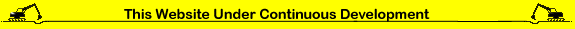
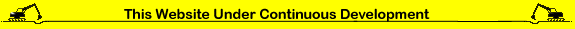
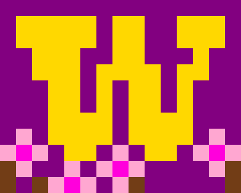
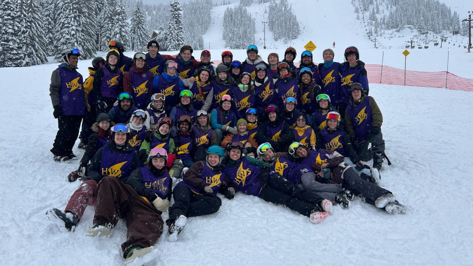

About Me
I am a senior at University of Washington, Seattle graduating in june!. I have a major in mathematics and a minor in data science.
I dabble in programming, and I hope to learn more about things like embedded software, game development, and shader rendering. I'm looking for a job in tech, so if you know of any open positions please email me.
I hope to move this website to be completely self hosting in my own homelab in the next year, and host my own email. Because I believe that the internet should be more independent.
🦞Lobste.rs Clone
Check it out here! | Github repoUsed: Rust, Sqlx + Postgres, Jinja html templates, htmx. Discord API
I browse the lobste.rs forum almost every day. I also want to learn how make a website with a backend of rust and postgres. So I made a forum site that uses Discord for authentication.

🎿Ski Instructor Training Manual
Github repo | WebsiteUsed: GitHub Pages, Markdown, Obsidian
I was the ski training director for Husky Winter sports, so I made an online training manual.

Husky Winter Sports
Used: just html and css
The website for Husky Winter Sports dates back to 2001, and I wanted to give it an update.

Pygame Hackathon: 🛰️Satellitious
GithubUsed: Python, Pygame
Fun space game I made with pygame. Took about a week.

Dotfiles: NixOS
GithubUsed: Linux, Nix, NixOS, all my free time
I've been using nix for the past year an I really like it. I still learning, but I feel like I'm on the forefront of development technology.

DubHacks Hackathon
Project: 🗃️Course Explorer
Used: React, Python, Canvas API
For the DubHacks hackathon my team made an app to unify the different websites UW professors use.
Hi!!!!!
 

You like Blues Traveler?
Did you check the robots.txt before scanning website?
r/place
In April of 2022 I participated in the second r/place event. Here's a pic of the area UW claimed.
If you can get a higher technology/computer score email me the results, so I can compare. :)

Check out all my bookmarks from my voyages across the internet: bookmarks
Skiing
I've been skiing for most of my conscious life, and ski instructing for 8 years now. Here's a group photo of my last year in Husky Winter Sports(the best ski club at UW).
You should try whitewater kayaking
Friends sites: